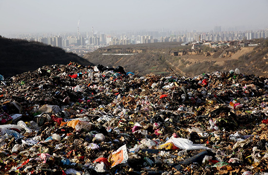
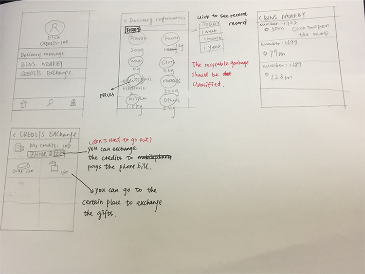

RESEARCH AND ANALYSIS
 |
 | ||
| In community | In dormitory | In street | Waste treatment plant |
BEHAVIOR ANALYSIS |
I interviewed 3 different groups and analysized their behaviors of dealing with the garbage. And each group has its own ways.The following is the summary of each group. |
CONFLICTS BETWEEN RESIDENTS AND COMPANIES OF GARBAGE RECYCLING
CONDITION OF GARBAGE CLASSIFICATION IN CHINA
|
In our country,it is mainly the cleaning staff, and some residential areas in the junkmen garbage in the garbage treatment that facilities are in the implementation of the terminal practitioners of garbage, they broke through the garbage recycling, such as cans, beer bottles and other newspapers, now that the economic value of the material, and it is sold to the recycling point state or private while the other has the value of resources, such as materials, waste batteries, waste plastics, waste paper, waste glass and waste recycling is not biological. |
In June 2000, the Ministry of construction, Beijing city pilot selected Shanghai, Guangzhou, Nanjing, Shenzhen, Hangzhou, Xiamen and Guilin as the 8 city garbage collection, carrying out garbage collection to try and explore, for over 10 years, and many of the city to carry out various forms of garbage classification pilot collection, but the final results are not obvious. At present, most cities in China still adopt the "mixed collection" mode of garbage. |
At present, the management level and technical level of material recycling industry in China are far behind the development of social and economic forms. In recent years, the state owned material recycling channels have shrunk, the management of private materials recycling channels is chaotic, a large number of recyclable materials are wasted, some recyclable hazardous waste (such as waste batteries, etc.) has been discarded because of no economic benefits so as to pollute the environment. |
WHAT CAN WE LEARN FROM OTHER COUNTRIES
|
In America, the government offers a variety of convenient conditions for garbage classification, in addition to the establishment of classified garbage in the streets, each community regularly sent the person responsible for the removal households out of garbage classification. In New York, garbage disposal is called "garbage management.". Just take a walk on the street, and you can see some black or dark brown garbage containers on both sides of the road, which says: garbage management company.Garbage management company is a well-known garbage collection and transportation company in the United states. |
Garbage classification in Japan is very detailed, in addition to the general solid waste into combustible and non combustible waste, resource waste is divided into clean plastic, paper, old newspapers, old clothes, plastic beverage bottles, cans bottles, beverage bottles and other glass. The new occupants will soon receive a copy from the local cleaning the garbage and throw garbage in the guide the date, the above detailed description which belongs to the combustible waste, which belongs to the non combustible waste, which is the resource waste, and all kinds of garbage removal time. |
As early as 1904, Germany began to implement urban waste classification and collection, which has been more than 100 years. After more than a century of development, has formed a set of mature and reasonable system. Typically, each residential building has 3 to 4 bins, storing various packages, non recyclable waste, paper products and glass bottles. According to the household density of the residential building, the garbage company determines the size of the garbage bin and determines the cost of the garbage disposal which the residents need to pay. Household appliances, batteries, furniture and other garbage are fixed point collection processing. |
EXTRACT MAIN IDEAS
INITIAL PROCESS DESIGN
 |
|||
| Register | Get your own QR code | Classify the garbage | Throw away in the certain bin |
| Check and recycle | Get the points |
LOW FIDELITY PROTOTYPE
| App design | Bin function design |
|---|---|
|  |
FINAL DESIGN
| App design | Bin function design |
|---|---|